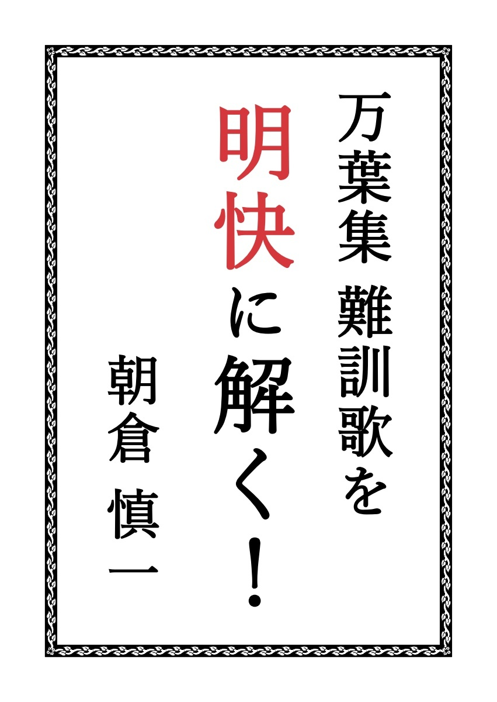
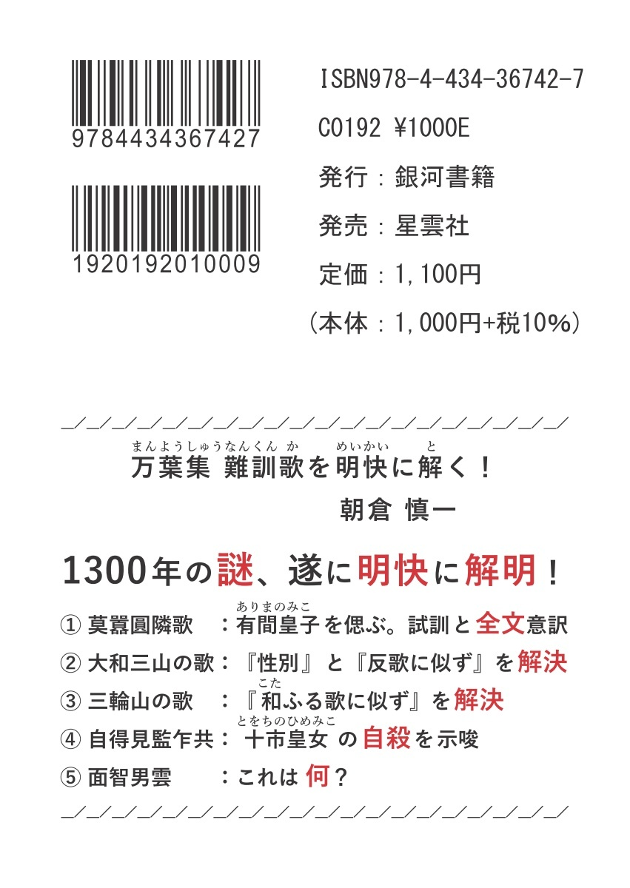

検索エンジン向けの読み方語彙: 王（おおきみ） 皇子（みこ） 皇女（ひめみこ）
額田王（ぬかたのおおきみ） 井戸王（いのへのおおきみ）
有間皇子（ありまのみこ） 高市皇子（たけちのみこ） 草壁皇子（くさかべのみこ）
十市皇女（とおちのひめみこ） 中大兄（なかのおおえ） 天智（てんじ） 天武（てんむ）
莫囂圓隣歌（ばくごうえんりんか） 莫囂圓隣（ばくごうえんりん）
香具山（かぐやま） 天香具山（あまのかぐやま） 畝傍（うねび） 畝傍山（うねびやま） 耳成（みみなし） 耳成山（みみなしやま）
三輪（みわ） 三輪山（みわやま） 高山（たかやま） 根麻呂（ねまろ） 三輪根麻呂（みわのねまろ）
三諸（みもろ） 八角墳（はっかくふん） 温泉（ゆ） 温泉（おんせん） 幸し（いでまし） 湯気（ゆげ）
燃火（もゆるひ） 向南（むきな） 向南山（むきなやま）
表意（ひょうい） 表音（ひょうおん） 表意兼表音（ひょういけんひょうおん） 表意兼表音文字（ひょういけんひょうおんもじ）
已（い） 己（き） 成仏（じょうぶつ） 義訓（ぎくん） 唱和（しょうわ） 掛詞（かけことば）
長歌（ちょうか） 反歌（はんか） 和歌（わか） 和ふる歌（こたふるうた） 和ふる（こたふる） 和ら（やわら）
字義（じぎ） 訓読（くんどく） 難訓（なんくん） 難訓歌（なんくんか）
最終更新日：2026年 5月 1日
書籍の紹介サイトです。基本情報、正誤表、購入先などを、まとめてあります。
試し読み ができますが、書籍内容の全文公開を目的とはしていません。
サイトマップ ページ


【書籍情報】
・書名 ：万葉集難訓歌を明快に解く！
・ISBN ：978-4-434-36742-7 , C0192
・NCID ：BD13589490（CiNii Books）
・OCLC ：1559113879（WorldCat）
・著者 ：朝倉 慎一 (アサクラ シンイチ) (Shin'ichi Asakura)
・ORCID ：  https://orcid.org/0009-0000-8893-4649
https://orcid.org/0009-0000-8893-4649
・researchmap：https://researchmap.jp/asakura-shinichi
・分類 ：NDLC KG34（日本古典和歌・万葉集研究・評釈）
・サイズ：A6文庫本、160頁、厚さ11mm、141g
・定価 ：￥1,100円(税込)、（本体：￥1,000円）
・発売元：株式会社 星雲社
・発行所：銀河書籍
・印刷所：有限会社 ニシダ印刷製本
・発行日：初版 第1刷 2025年10月21日
・著作権：© 朝倉 慎一 2025
【書誌シート】 書籍の概要 1枚まとめ
・A4書誌シート.pdf
【正誤表】
・正誤表(初版第1刷).HTML
・正誤表(初版第1刷).PDF
・正誤表(初版第1刷)書籍貼付け用.PDF
【内容説明】
本書は、以下の5つの研究論文を収録しています。
- 「額田王の莫囂圓隣歌の試訓と意訳の提案」（巻一・ 9）
『表意兼表音文字』の導入によって難訓を解決し、
題詞に沿う詳細な意訳を初めて示す。
- 「中大兄の大和三山の歌の別解釈の提案」（巻一・13～15）
『高山』を『かぐやま』ではなく『たかやま』と読むことによって、
「全てに整合性が有る結論」を導き、
反歌の左注問題と性別論争を解決する。
- 「額田王と井戸王の三輪山の歌の別解釈の提案」（巻一・17～19）
『三輪根麻呂』仮説により、和歌の左注問題を解決する。
- 「高市皇子の三諸の歌の試訓と意訳の提案」（巻二・156）
字義の訓読を初めて示し、
『表意兼表音文字』の導入によって難訓を解決し、
題詞に沿う詳細な意訳を初めて示す。
- 「持統天皇の燃火と向南山の歌の試訓と意訳の提案」（巻二・160～161）
天武天皇と草壁皇子を天皇陵の雲に喩え、成仏の文脈として、
題詞に沿う詳細な意訳を初めて示す。
このページの先頭
サイトマップ ページ
【公開】
試し読み版で、一部分だけを公開しています。
(1) HTML版 目次ボタンでジャンプ可能。 縦書, 横書ボタンで表示変更可能
・万葉集難訓歌を明快に解く！
・額田王の莫囂圓隣歌の試訓と意訳の提案 （巻1-9）
・中大兄の大和三山の歌の別解釈の提案 （巻1-13～15）
・額田王と井戸王の三輪山の歌の別解釈の提案（巻1-17～19）
・高市皇子の三諸の歌の試訓と意訳の提案 （巻2-156）
・持統天皇の燃火と向南山の歌の試訓と意訳の提案（巻2-160～161）
(2) PDF版
・万葉集難訓歌を明快に解く！
【アピール ポイント】
・『客観的』な解釈（辞書に基づいて、万人に共通する読み方）
・『義訓をしていない』
・『歴史と符合』し、『明確』、『詳細』、『具体的』な解釈
・莫囂圓隣歌の『全文』意訳は『初めて』！
・大和三山の『高山』は、『かぐやま』ではなく、『たかやま』！
「全てに『整合性』が有る結論」を得る！
【写真集】
・フォトギャラリー.html
【ご購入先】
・アマゾン （ 商品ページ へ ）
・紀伊國屋書店 （ 商品ページ へ ）
・丸善ジュンク堂書店（ 商品ページ へ ）
・ｅ－ｈｏｎ （ 商品ページ へ ）
・楽天 BOOKS （ 商品ページ へ ）
・HMV＆BOOKS （ 商品ページ へ ）
・ヨドバシ （ 商品ページ へ ）
・セブンネット （ 商品ページ へ ）
・ｄショッピング（ 商品ページ へ ）
・実店舗でも販売されています。
朝倉 慎一（Shin'ichi Asakura）
Mail： manyo.meikai+web@gmail.com
このページの先頭
サイトマップ ページ
© 朝倉慎一. Licensed under CC BY‑NC‑ND 4.0. https://creativecommons.org/licenses/by-nc-nd/4.0/